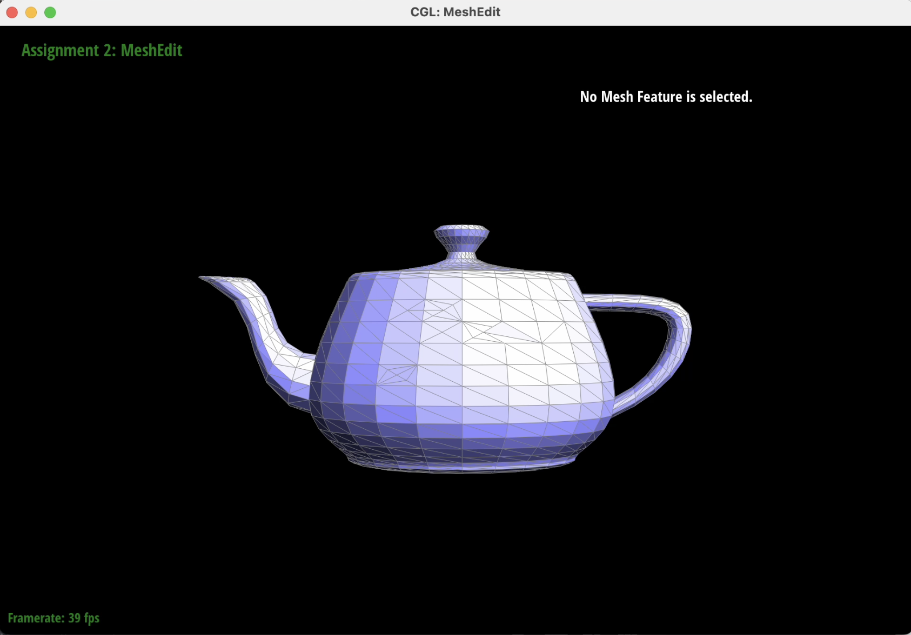

Overview
In this project, we implement geometric modeling techniques. In the first section, we implement de Casteljau algorithm to build Bezier curves and surfaces. In the second section, we implement local and global operations on a triangular mesh from smooth shading to mesh subdivisions, using the half-edge data structure. Specifically, we implement Phong shading using vertex normals, and we implement edge flip, and edge split as local mesh operations. As a global mesh operation, we implement the loop subdivision for mesh upsampling. The details of each part are below.
Section I: Bezier Curves and Surfaces
Part 1: Bezier Curves with 1D de Casteljau Subdivision
The de Casteljau's algorithm and our implementation to evaluate Bezier curves.Bezier curve is a parametric representation of a smooth curve. They are useful in many applications in graphics from camera paths to 3D object modeling. Curves differ from functions because curves can move in any direction and can include loops (i.e. in a 2D case one x-value can have several y-values). We build this curve representation from discrete points that approximate the curve. In a nutshell, Bezier curves use linear interpolation to find a single point which traces out a smooth curve approximated by the control points. In this part, we use de Casteljau's subdivision algorithm to evaluate a 1D Bezier curve procedurally, based on a set of given discrete control points. Each step in the de Casteljau's algorithm finds \(n-1\) intermediate control points from \(n\) given points by linearly interpolating between a pair of points at a parameter \(t\). Each level in the de Casteljau's evaluation returns a set of coefficients used to find intermediate points. The formula to find the intermediate point \(p_i'\) using linear interpolation or \(lerp\) from two neighboring points \(p_i\) and \(p_{i+1}\) is shown in the image below. The points are evaluated at a value \(t\), which varies from 0 at point \(p_i\) to 1 at point \(p_{i+1}\). The resulting curve is constructed by connecting pairs of control points, chaining piece-wise cubic Bezier curves. Since the points are shared, the curve is continuous.
The algorithm repeats until the subdivision recursively reaches the base case of a single point, which lies on the Bezier curve. The point is shown in the image below in red.
We create our own degree-5 Bezier curve with 6 control points. The Bezier curve for these control points is shown below with modified control points and the \(t\) parameter.

Below are the screenshots of each step / level of the evaluation from the original control points down to the final evaluated point. The completed Bezier curve is shown in the last image in green.

|
|
|
|
|
|
|
|
|
|
Below is a screenshot of a slightly different Bezier curve, created by moving the original control points around. The red point was also moved along by modifying the parameter \(t\) via mouse scrolling.
|
|
Part 2: Bezier Surfaces with Separable 1D de Casteljau
In this part, we extend the de Casteljau algorithm from Bezier curves to Bezier surfaces.Instead of one parameter \(t\), we evaluate the surface at two parameters \(u\) and \(v\), each varying between 0 and 1. We interpolate the pairs of neighboring points along one dimension \(u\), while holding the other dimension \(v\) constant. Evaluating along one dimension for all the control points using the same recursive 1D interpolation we use in Part 1 gives us the same number of control curves, which make up the Bezier surface.
Below is a screenshot of bez/teapot.bez evaluated by our implementation.|
|
Section II: Triangle Meshes and Half-Edge Data Structure
Part 3: Area-Weighted Vertex Normals
In order to calculate the normal of a vertex, we consider all faces connected to the vertex. For each face adjacent to the vertex, we check to see if the face is a boundary. If not, then the corresponding normal is retrieved and stored. We ignore boundary faces. We calculate the face area using the lengths of each edge (also called Heron's formula). The area is added to a cumulative total area value. This step is repeated for each non-boundary face until the original face is reached. This is detected by checking the current halfedge against the one associated with the vertex, as the current vertex can only store a reference to one halfedge. Moving between the faces is achieved by moving to the twin()->next() of the current halfedge, akin to traversing a linked list. This ensures that as long as there is no boundary, all faces attached to the given vertex will be checked.
Once all the areas and normals have been gathered and stored, the weighted normal is calculated by multiplying each normal with the corresponding face area divided by the total area. The weighted normal is then normalised, and returned.
|
|
|
|
Part 4: Edge Flip
Briefly explain how you implemented the edge flip operation and describe any interesting implementation / debugging tricks you have used.
The edge flip operation doesn't create any new mesh elements, and consists of just rearranging elements already present in the mesh.
As such, the entire function consists of pointer reassignments.
At first, all the elements are retrieved and stored as labeled in the left image in the diagram below.
Once all items had been stored, rearrangements were done to match the right image in the diagram below.
By storing individual Iters for each element, there was no risk of "losing" access to an element, e.g.
by pointing to the vertex v0 in an Iter, it is always guaranteed to be the same element, whilst using
h01->vertex() may give a different vertex depending on when you call the member function (before or after
a reassignment of it's vertex). Forgetting that you have set a different vertex and then trying to access it
will give undesired behaviour.
Show screenshots of the teapot before and after some edge flips.
|
|
|
Part 5: Edge Split
Briefly explain how you implemented the edge split operation and describe any interesting implementation / debugging tricks you have used.
The implementation of Edge Split was similar to that of the Edge Flip, but new elements were created
and added to the mesh. Before that however, the same beginning approach was taken, and all the elements
noted in the diagram below were pointed to with Iters, making future access to them safer & simpler.
The first element to be created is the center vertex, m. This is created first as it is easier to
build off of it, and attach all the other new elements to it. The position is generated by simply
taking midpoint of the present edge and its vertices. It is tied to the halfedge h02, and also receives
its newPosition from the edge e0 that it is created on. This is for the next task, loop subdivision,
discussed in Part 6 below. The vertex m is also marked as new, also for Part 6.
Three new edges are then created, with the important features being their isNew flag and our flag
that we added, isOldHalfEdge. The isNew flag is used in Part 6 to determine which edges require
splitting. We created the isOldHalfEdge flag to represent a similar state, but that the edge that
has the flag set to true is not entirely new, but just half of a previous/old halfedge. The flags
are set accordingly (isNew = true for totally new halfedges, isOldHalfEdge = true only for e1).
Finally, two new faces and six halfedges are created. Their neighbours are assigned according the
right image in the diagram below. This mainly consisted of Iter assigning.
|
|
Below are screenshots of a mesh before and after some edge splits.
|
|
|
|
Below are screenshots of a mesh before and after a combination of both edge splits and edge flips.
|
|
|

|
Below is our eventful debugging journey.
The most challenging part of debugging the edge split operation was making sure that all pointers have a valid reference, and that old pointers have been re-assigned. Some issues we experienced in this task is when not all pointers were assigned correctly, the traversing operation would get into an infinite loop. In other cases, where pointers were not correctly assigned, the program would crash. Tricks we used for debugging is calling check_for provided function on all the given objects, both before the split operation and after. Additionally, picking the same edge to split consistently in the GUI helped debug issues with the code. Finally, drawing all the elements in the old and the new mesh triangles and following the diagram helped with testing our implementation.
We didn't implement the extra credit support for boundary edges.
Part 6: Loop Subdivision for Mesh Upsampling
Briefly explain how you implemented the loop subdivision and describe any interesting implementation / debugging tricks you have used.We followed the advice of implementing the design in three steps as commented in the code (Step A, B, C).
Step A:
Compute all new positions of the current and vertices-to-be, and store them in their respective places (in vertex::newPosition for old vertices, and in edge::newPosition for vertices-to-be). This was done using the formula in the slides (Lec 8, Slide 39). This required iterating around every halfedge around the current vertex, then retrieving and saving their vertex positions. Weighting was also calculated based on the number of vertices attached to the current, which could be determined by calling the degree() function.
This is also repeated for all current edges in the mesh, with the new position being saved in the newPosition member of each edge.
Step B:
1) All current vertices were marked as old, as well as all current edges. Once this was complete, every single edge in the mesh was split. As we split the edges, new ones are created, so we had to check that the current edge is completely old, meaning that both isNew and isOldHalfEdge are false. Whilst splitting, we ensured to skip any edges that were next to a boundary.
When the splitEdge function is called, as mentioned previously in Task 5, edges are marked using the fields edge::isNew, & edge::isOldHalfEdge. These are used as conditions for the next substep of B, and are explained below.
2) Once all edegs were split, all edges were iterated over once again, this time to do edge flips. The conditions to ensure that we only flipped the correct edges were:
- Check that they are completely new, i.e. isNew is true, and isOldHalfEdge is false
- Check they are not on next to a boundary.
- That exactly 1 of the vertices of the edge are new, and one is old.
Step C:
Once all positions were calculated, edges split, and edges flipped, every vertex was iterated over and given a newPosition.
At a high-level we follow the algorithm described in the project specification. At each upsample function call, we subdivide the entire mesh by inserting new edges and vertices. Each triangle is split into 4. This operation creates 3 new edge elements, 1 new vertex and 6 halfedges. The old edge being split is labeled as old (represented by black in the figure below). One half of the edge is old and the other half of the edge is new, but is marked as old. To make sure we don't get into an infinite loop of subdividing new edges, we mark these new edges that represent the old edge with a flag isOldHalfedge.
|
|
One debugging and testing strategy we employed was counting the number of edges, vertices, and triangles, and checking that the number of edges and vertices in the mesh before and after subdivision is consistent with the Euler formula for the number of triangles. Checking the number of elements was one way of ensuring that the subdivision creates the expected number of elements.
The most challenging part of implementing the loop subdivion was debugging the flipEdge and splitEdge functions. Tested in isolation, without changing the number of triangles, they seemed to work fine. However, when following the implementation steps, some halfedges were not correctly assigned. Using visual output as a debugging tool, we added a few more print statements to the GUI to display the properties of vertices and edges. We tracked the issue down by following the subdivision on a small example (cube) on one particular vertex that looked out of place. We were able to isolate and locate the issue with our methods that were not re-assigning the vertex pointers after flipping or splitting an edge.
Take some notes, as well as some screenshots, of your observations on how meshes behave after loop subdivision. What happens to sharp corners and edges? Can you reduce this effect by pre-splitting some edges?
After the loop subdivision, sharp corners become smoother, and the overall shape tends to approximate a sphere.
Below are some screenshots of the mesh (beetle.dae).

beetle.dae mesh before subdivision. |
beetle.dae shading before subdivision. |
After subdivision, the shading becomes smoother and sharp corners tend to smoother curves. Below are the screenshots showing the details for the edges before and after subdivision in the beetle.dae mesh.
beetle.dae mesh edges before subdivision (zoomed in). |
beetle.dae mesh edges after subdivision (zoomed in). |
In our code, we ignore the vertices and edges that are on the edge (or boundary) of a mesh. Therefore, the number of vertices/edges on the boundary stay the same. Below is a screenshot of the edges after subdivision. This effect can be reduced by pre-splitting some edges or placing a new vertex as a mid-point of the boundary edge.
beetle.dae mesh edges after subdivision (zoomed in). |
Load dae/cube.dae. Perform several iterations of loop subdivision on the cube. Notice that the cube becomes slightly asymmetric after repeated subdivisions. Can you pre-process the cube with edge flips and splits so that the cube subdivides symmetrically? Document these effects and explain why they occur. Also explain how your pre-processing helps alleviate the effects.
The loop subdivision algorithm doesn't symmetrically smoothen the cube because the cube itself is designed asymmetrically (with respect to the four cardinal directions), with two triangles only per face. This is the most efficient way to design a cube with the least number of triangles, but we can see that after 1 iteration there is already a slight skew to some of the new vertices.
By simply splitting the edge on each face of the cube, we create a symmetrical cube (in all four cardinal directions). Once we then start loop subdividing to smoothen the cube, the result remains symmetrical.
|
|
|
|
|
|
|
|
Part 7 (Optional, Possible Extra Credit)
We didn't implement the extra credit.Project website: https://irina694.github.io/cs284-sp23-projects/proj2/index.html